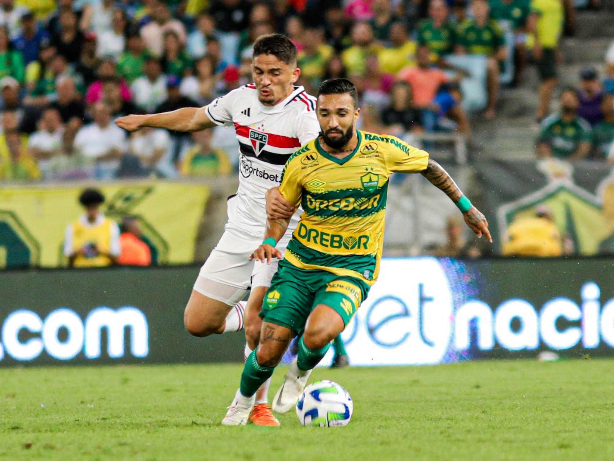

São Paulo empata sem gols com o Cuiabá no Morumbi
Na tarde deste domingo (26) às 18:30, o São Paulo de Dorival Júnior enfrentou o Cuiabá no Morumbi. O Soberano ficou no empate sem gols contra a equipe cuiabana.
O técnico do time Paulista entrou em jogo com uma novidade, Lucas Moura, que estava se recuperando de um estiramento na coxa sofrido no jogo contra o Palmeiras.
O time tricolor começou com força total no meio, com os dois principais meias James Rodriguez e Lucas. No primeiro tempo o ataque Tricolor teve muita dificuldade em finalizar, o lance de maior perigo veio de uma cabeçada do meia atacante Lucas após o cruzamento do lateral direito Nathan, que levou perigo ao goleiro Walter que se esticou para alcançar a finalização.
Já na segunda etapa, ainda sem gols, a equipe viu os erros de transição entre meio campo e ataque aumentarem, o que resultou nos contra ataques da equipe Cuiabana ao gol do goleiro Rafael.
Com dificuldades para concluir as jogadas, a equipe de Dorival Júnior ameaçou principalmente em chutes de longa distancia dos meias da equipe. Mesmo com alguns titulares o time de Dorival obteve muita dificuldade na criação de jogadas onde o meio campo era obrigado a apoiar as laterais.
Link de referência